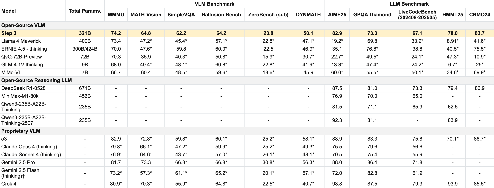
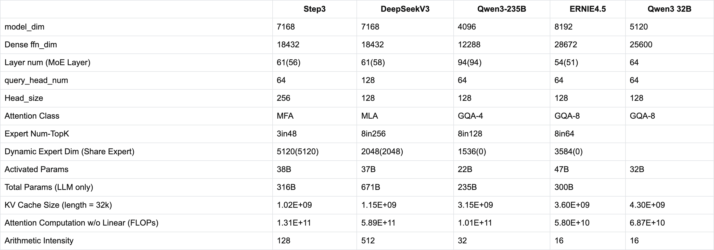
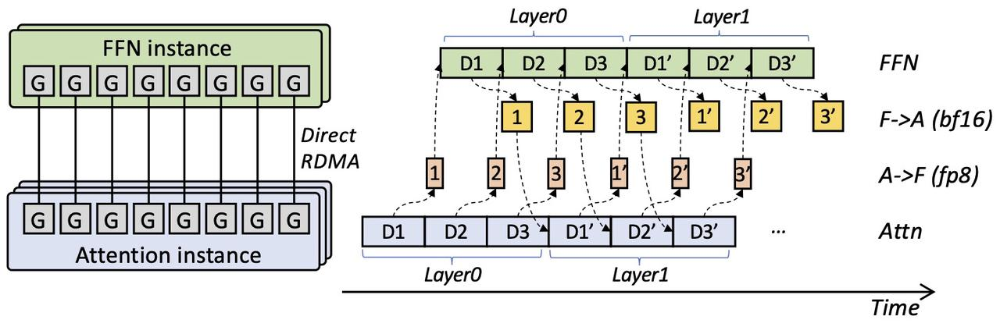
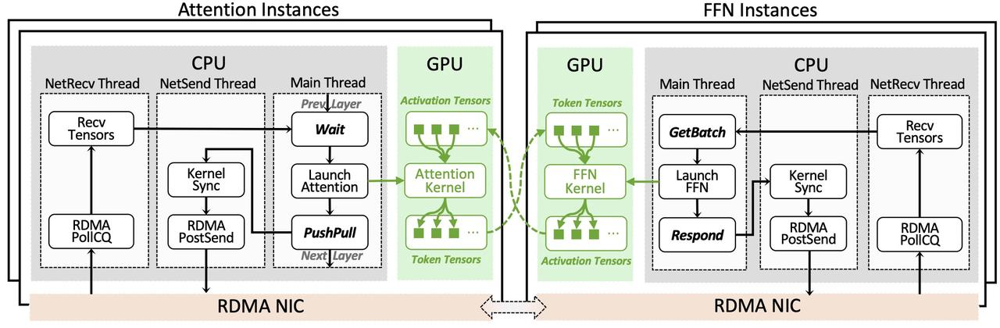
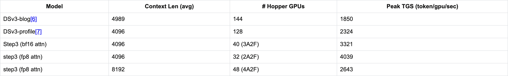

Step3：高性价比的多模态智能
引言
Step3 是我们前沿的多模态推理模型，采用混合专家（MoE）架构，总参数量为 321B，激活参数量为 38B。它经过端到端设计，在提供顶尖视觉语言推理性能的同时，尽可能降低 decoding 成本。通过 Multi-Matrix Factorization Attention（MFA）与 Attention-FFN Disaggregation（AFD）的协同设计，Step3 在旗舰级和低端加速器上都保持了出色的效率。
现在，你也可以使用它了。今天，我们发布：
Step3：凭借准确的视觉解读和更少的幻觉，实现有据可依的多模态推理。
让我们一起突破边界，你的创新从这里开始。
整体性能

说明：
* 表示在相同设置下复现的性能。
† Gemini 2.5 Flash（thinking）的评估结果可能低于模型的实际性能，尤其是在 MathVision 上，原因是其指令遵循能力不足。
预训练数据
在预训练期间，Step3 处理了覆盖十余种语言的超过 20T 个文本 token，其中 3.7T 个高质量 token 预留给退火阶段，同时加入 4T 个图文混合 token 来支持多模态训练。
提供如此规模的数据，需要数据工程与数据科学之间的精密协作。原始数据来自多种网络内容以及通过合作取得授权的出版商资料，随后使用我们内部的文档解析器进行高效提取和归一化处理。
为处理噪声和冗余，每份文档都要经过多阶段理解框架。由十余个专门 NLP 模型组成的工具集会评估内容质量（例如缺陷、毒性和信息价值），识别高层主题（例如 STEM、文学、代码和数学），并将文档划分到 50 多个细分领域。接着，我们采用基于 MinHash 的去重来消除近似重复内容，再进行领域感知的下采样，确保退火数据集保持均衡和多样性。总体而言，这条流水线使用内部的分布式 CPU/GPU 集群，已处理超过 100B 份源文档。
除此之外，我们还开展大规模案例研究和广泛的消融实验，以优化过滤阈值与采样策略，最终形成训练“数据配方”。这种严格的数据筛选产生了高质量、多样化的数据集，不仅支持强健的模型性能，也为我们的多模态数据语料奠定了坚实基础，后续章节将对此展开介绍。
预训练模型架构
在设计模型架构时，我们优先优化 decoding，主要原因如下：
- decoding 的模型 FLOPs 利用率（MFU）较低，因此每个 token 的成本最高，尤其是与训练和 prefill 相比。
- 由于推理模型会随着 chain-of-thought 变长而变得更强，提高 decoding 效率、降低其成本，就能让相同的计算预算支持更深入的推理，进而获得更高的智能水平。
Step3 架构的开发遵循模型与系统协同设计的方法，将算法创新（尤其是 attention 机制和混合专家（MoE）架构方面的创新）与硬件特性、部署约束紧密结合。
MFA：Step3 效率的核心是我们提出的 Multi-Matrix Factorization Attention（MFA）[2]。Step3 降低了 KV cache 需求和 attention FLOPs，每个 token 的 attention 成本仅为 DeepSeek V3 的 22%，从而显著降低了先进推理能力的使用成本。

Step3 包含 321B 参数，却仍可在 8 张 48 GB GPU 上运行，处理高达 800K token（batch × 长度）* 的上下文。这一规模经过审慎选择，在性能与工程成本之间取得平衡，并借鉴了先进的训练配方 [3, 4]。
* 这些总 token 数的计算假设非 attention 参数采用 int8 量化，而包括 KV cache 在内的其他组件仍使用 fp16 或 bf16 精度。
多模态
16 倍空间下采样是 Step3 多模态处理路径的核心。我们的 5B 参数视觉编码器基于 Eva-CLIP 5B[5] 构建，先提取密集的图像特征，再通过两个连续的二维卷积层进行压缩，将 token 网格缩小至原来的十六分之一。得到的视觉 token 在进入大语言模型（LLM）之前与文本 token 无缝融合，形成能力强、计算高效的表示，为 Step3 的多模态能力提供支撑。
多模态训练分为两个阶段。第一阶段以训练视觉编码器为中心：我们将其与一个紧凑的 LLM 联合优化，在来自 Paired 数据集和部分 Multi-Task 数据的 3.5 万亿个 token 上执行下一 token 预测。第二阶段冻结视觉编码器，在完整数据集上训练 Connector 和 LLM，总计使用 1.4T 个 token。
我们的多模态数据集包含 4T 个不重复 token，主要由 Paired、Interleaved 和 Multi-Task 数据组成。Paired 数据包括开源数据集、从网络抓取的图文对，以及特定领域的专业图文对，全部经过严格清洗，包括相似度过滤、重新平衡和去重。来自网页、论文、书籍和教程的 Interleaved 数据，依据其信息密度、图文相关性等指标进行清洗。Multi-Task 数据包括 OCR、表格、视觉定位、GUI、视频、VQA、考试题和推理数据，其中很大一部分为合成数据。总体而言，中文和英文各占约一半，其余约 5% 覆盖其他语言。
后训练
我们的对齐流水线分为两个阶段。首先，我们在经过筛选的对话上进行监督微调，内容覆盖多模态数学推理、竞赛编程、多种 STEM 主题，以及通用的非推理任务。接着，我们进行强化学习（RL）：结构化问题获得密集的、经过自动验证的奖励，开放式任务则依赖偏好模型或人类反馈。一个专门的价值网络提供可靠的优势估计，使整个训练过程中的策略更新保持稳定。
在监督微调期间，每段对话都必须能够正确解析，困惑度处于合理范围，且不能存在近似重复、过度重复 token、杂乱的 URL 或图像，以及过高的 n-gram 重叠。在样本进入微调数据集之前，一个综合毒性、事实性和长度信号的轻量级质量评分器负责最后一道过滤。此外，我们还显著增强了模型的 agent 能力。具体而言，我们采用逆向合成流程，生成涉及推理和工具使用的复杂查询，随后使用有向无环图（DAG）、拒绝采样和基于难度的过滤进一步优化。
可验证的提示进入 RL 阶段。在这里，一个内部多模态推理模型预测解题步骤并分配难度标签，确保训练均衡地包含简单、中等和困难样本。这些问题覆盖数学、编程、逻辑和复杂问题求解，从基础教育一直延伸到前沿进展。其中还包括多模态感知和理解方面的专项任务，专门用于支持 agent 交互。
基础设施
LLM 在 decoding 期间的硬件效率较低，对于长上下文推理任务尤其如此。Step3 采用硬件感知的模型与系统协同设计方法，专门调整其架构以尽可能降低 decoding 成本。Step3 在两个关键维度上进行了创新：（1）新颖的 Multi-Matrix Factorization Attention（MFA）机制，在保持较强 attention 表达能力的同时，显著降低 KV cache 大小和计算量；（2）Attention-FFN Disaggregation（AFD），一种将 attention 层与前馈网络（FFN）层解耦到专用子系统中的分布式推理系统。这种协同设计实现了前所未有的成本效率：与 DeepSeek-V3 和 Qwen3 MoE 235B 等模型相比，Step3 显著降低了理论 decoding 成本，且优势随上下文变长而扩大。
Step3 在每个 token 激活 38B 参数（多于 DeepSeek-V3 和 Qwen3 MoE 235B）的同时实现了低成本，表明与硬件相适配的 attention 算术强度、MoE 稀疏性和 AFD 是实现成本效益的关键。我们在有利于 DeepSeek-V3 的场景下与其进行了直接比较。在 Hopper GPU 上，我们的实现在 50ms TPOT SLA 下（4K 上下文、FP8、无 MTP）获得了最高每张 GPU 每秒 4,039 token 的 decoding 吞吐量，高于相同设置下 DeepSeek-V3 的 2,324，确立了 LLM decoding 的新 Pareto 前沿。
近期模型在激活参数量与 decoding 成本方面的 Pareto 前沿。较深色区域是 GQA 模型的 Pareto 前沿。
前文介绍 MFA 时已提及 AFD，现在我们介绍 Attention-FFN Disaggregation（AFD）的思路。为高效实现 AFD，我们的系统采用两项关键技术：
- 多阶段流水线：由于 attention 和 FFN 层在物理上分离，必须让它们并行运行，才能最大化整体吞吐量。如图所示，attention 实例依次接收并处理 3 个输入样本。对于每个已处理样本，attention 实例将中间计算结果发送给 FFN 实例，并等待相应输出。整个过程采用流式方式，因此两侧的 GPU 利用率都能充分饱和，在稳定状态下不会浪费任何 GPU 周期。

Step3 AFD 系统的多阶段流水线
- 高效的 GPU 直接通信：Step3 推理的严格 SLA 要求不仅包括高吞吐量，也包括低延迟。我们开发了 StepMesh，这是一个基于 GPUDirect RDMA、专门面向 AFD 的通信库，具有超低延迟、零 SM 占用以及灵活的 M 对 N 通信能力。它的接口也便于支持 GPU 以外的其他异构加速器，我们将持续开展相关工作。StepMesh 已在 GitHub - stepfun-ai/StepMesh 开源。

StepMesh：面向 Attention-FFN Disaggregation 的 GPU-Direct RDMA 库
性能结果：我们的结果令人振奋，表明 Step3 相比 DeepSeek-V3 在 token/GPU/秒上有显著提升。上下文长度为 4096 时，我们仅使用三分之一的 Hopper GPU，就实现了 4000 的峰值 TGS（Token/GPU/Second），比 DSv3 报告的数值高约 70%。请注意，该 TGS 是在每个 token 严格限定 50ms decoding 时间的条件下获得的。

与 DSv3 已报告数值在 20 token/s decoding SLA 下的性能比较。TGS：Token/GPU/s。
已知问题
- 在扩展 Step3 的 MoE 架构规模的过程中，我们观察到一种新的失效模式，并将其称为“dead expert”现象。在这种情况下，某些动态专家实际上变得不活跃；这并非源于路由不均衡，而是因为其输出权重的范数在训练过程中趋于零。这导致它们在模型前向传播中的贡献可以忽略不计，尽管 token 仍会被路由给它们；这与更常被讨论的“router collapse”不同。我们仍在积极研究这一现象的根本原因。随着研究推进，我们将分享进一步的认识。
- 我们当前的 Step3 虽然在许多方面能力强大，但对 vibe coding 的优化仍不充分。此外，长时间的多模态推理训练揭示出一种明显的权衡：随着模型的文本推理能力提升，其视觉感知准确率会下降。我们正在积极努力缓解这些局限。
引用
@misc{step3system,
title={Step-3 is Large yet Affordable: Model-system Co-design for Cost-effective Decoding},
author={StepFun Team},
year={2025},
eprint={2507.19427},
archivePrefix={arXiv},
primaryClass={cs.LG},
url={https://arxiv.org/abs/2507.19427},
}
@misc{step3blog,
title={Step3: Cost-Effective Multimodal Intelligence},
author={StepFun Team},
url={https://stepfun.ai/research/step3},
}参考文献
[1] https://github.com/stepfun-ai/Step3/blob/main/Step3-Sys-Tech-Report.pdf
[2] Jingcheng Hu, Houyi Li, Yinmin Zhang, Zili Wang, Shuigeng Zhou, Xiangyu Zhang, and Heung-Yeung Shum. 2025. 多矩阵分解 attention。 In Findings of the Association for Computational Linguistics: ACL 2025, pages 25114–25126, Vienna, Austria. Association for Computational Linguistics.
[3] Houyi Li, Wenzhen Zheng, Qiufeng Wang, Zhenyu Ding, Haoying Wang, Zili Wang, et al. 2025. 可预测的规模：第二部分，Farseer：大语言模型中更精细的 scaling law。 arXiv preprint arXiv:2506.10972.
[4] Houyi Li, Wenzhen Zheng, Qiufeng Wang, Hanshan Zhang, Zili Wang, et al. 2025. 可预测的规模：第一部分，Step Law——大语言模型预训练中的最优超参数 scaling law。 arXiv preprint arXiv:2503.04715.
[5] Quan Sun, Yuxin Fang, Ledell Wu, Xinlong Wang, Yue Cao. Eva-clip：面向大规模 CLIP 的改进训练技术。 arXiv preprint arXiv:2303.15389.
[6] https://github.com/deepseek-ai/open-infra-index/tree/main/202502OpenSourceWeek
[7] https://github.com/deepseek-ai/profile-data/